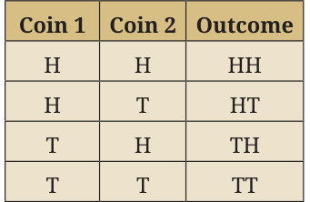

7.3.1 Sample Space
Recall that the sample space, denoted by S, is the list of all possible outcomes. Each possible outcome is called an element of the sample space.
- The sample space S must include every possible outcome.
- No outcome should be listed more than once.
- The number of elements in the sample space is called the sample size and is denoted by \(n(\text{S})\).
Examples of Sample Space
- The sample space for whether it rains tomorrow could be \(\text{S} = \{\text{Rain, No Rain}\}\) and the sample size \(n(\text{S}) = 2\).
- The sample space for a match, i.e., the possible outcomes for a team playing — could be \(\text{S} = \{\text{Win, Lose, Draw}\}\) and sample size \(n(\text{S}) = 3\).
- Tossing a Coin:
- Experiment: Tossing a fair coin once.
- Sample Space: \(\text{S} = \{\text{Heads (H), Tails (T)}\}\)
- Sample Size \(= 2\)
- Rolling a Die:
- Experiment: Rolling a standard 6-sided die.
- Sample Space: \(\text{S} = \{1, 2, 3, 4, 5, 6\}\)
- Sample Size \(= 6\)

- Tossing Two Coins:
- Experiment: Tossing two coins simultaneously.
- Sample Space: \(\text{S} = \{\text{HH, HT, TH, TT}\}\)
- Sample Size \(= 4\)
Think and Reflect
When we used the sample space {Rain, No Rain} in Example 1, we focused only on whether it will rain or not. However, if we want to include different amounts of rainfall like drizzle, light rain or heavy rain, we need to expand the sample space to {No Rain, Drizzle, Light Rain, Heavy Rain} so that it better matches the level of detail required for the question. It is important to ensure the sample space is detailed enough to suit the specific problem being studied.
7.3.2 Events
An event is any single possible result or combination of results that might happen when you perform a random action. It is like choosing particular outcomes from all the things that could possibly occur. An event is a subset of a sample space.
Examples of Sample Spaces and Events
- Tossing Two Coins
- Sample space: All possible results like Head–Head, Head–Tail, Tail–Head, Tail–Tail. \(\text{S} = \text{Sample Space} = \{\text{HH, HT, TH, TT}\}\)
- Event: ‘At least one coin shows Head.’ \(\text{E} = \{\text{HH, HT, TH}\}\).
- Rolling a 6-sided Die
- Sample space: All faces numbered 1 through 6. \(\text{S} = \{1, 2, 3, 4, 5, 6\}\)
- Event: ‘The number rolled is greater than 4.’ \(\text{E} = \{5, 6\}\).
- Picking Fruit from a Basket
- Sample space: Types of fruit you might pick, for example, Apple, Banana and Orange. \(\text{S} = \{\text{Apple, Banana, Orange}\}\)
- Event: ‘Picking a fruit that is yellow.’ \(\text{E} = \{\text{Banana}\}\).